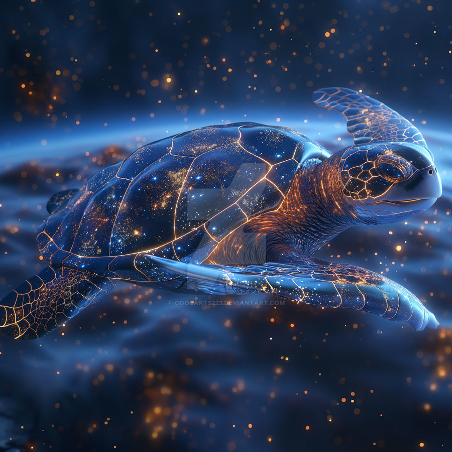

This is a random website; click on this link
This is a random website; click on this link
I guess I'll have something in here
Turtles and stars might seem worlds apart, but they both capture our imagination in their own unique ways. Turtles, with their ancient, steady presence, have long been symbols of wisdom, endurance, and protection in various cultures. They carry their homes on their backs, embodying a deep connection to the earth and a slow, deliberate pace through life.
Stars, on the other hand, sparkle from the vast expanse of the cosmos, representing dreams, hopes, and the endless possibilities of the universe. They light up the night sky, guiding sailors and dreamers alike, and remind us of the infinite scope of the universe and our place within it.
Imagine a turtle looking up at the night sky, its eyes reflecting the twinkling stars above. In that moment, the turtle's calm, grounded nature meets the stars' boundless, shimmering beauty. It's a reminder that no matter how small we might feel in the grand scheme of things, both our steady journey through life and the vast, distant dreams we chase are part of a much larger, interconnected whole.
Hi! Hover your mouse over this paragraph! Turtles!
OG title:Blah Blah This is a test
I'm not a turtle
Or am I?
Space Turtles In the velvet tapestry of night, Where stars like whispers softly gleam, The space turtles drift in gentle flight, Sailing through the cosmic dream. With shells of crystal, green, and gold, They glide on solar breezes' sigh, Across the universe, bold and old, Beneath the twinkling, silent sky. Their eyes, like galaxies so deep, Reflect the stardust's mystic dance, They wander where the comets sweep, In the celestial expanse. Among the planets, they take pause, On moons of sapphire, dust, and fire, Their journey follows nature’s laws, In paths both grand and to inspire. In darkened voids, they gently roam, Past nebulae and ancient light, With every star, they find a home, And every orbit brings new sight. Their tales are written in the stars, Of wisdom, wonder, timeless grace, They travel worlds both near and far, Eternally, in space’s embrace. So when you gaze upon the night, And see the stars’ enchanting glow, Think of the turtles, shining bright, In the cosmic seas, they wander slow.
We're going to start of this section with
Style!
This is Big!
Turtles are in the center of this paragraph line
Title: Cosmic Shells Summary: In a distant galaxy, a peaceful planet named Turtlios is home to wise, ancient turtles who possess extraordinary abilities to manipulate space and time. When a malevolent space pirate, Captain Vorak, seeks to plunder Turtlios for its rare cosmic crystals, the turtles must defend their world. The story follows three young turtles—Zara, Leo, and Riko—who are chosen to undertake a perilous mission. Each turtle has unique skills: Zara can bend light, Leo commands cosmic winds, and Riko can heal and mend space rifts. Guided by the mystical Elder Shell, the trio journeys across stunning celestial landscapes, from nebula forests to black hole caverns, gathering allies and powerful artifacts to thwart Vorak's plans. As the final battle unfolds, the turtles learn valuable lessons about courage, teamwork, and the true meaning of home. With their combined powers and newfound wisdom, they confront Vorak in an epic showdown that will determine the fate of Turtlios and the balance of the cosmos.
"I came back with the milk!" Turtle Four said
"After so many years...I mean great!!" Turtle Five replied
"Hello?" Turtle Three said. "Can you hear me...?"
"How 'bout now?"Turtle Three continued.
"How 'bout some math"Turtle 6 said. "53*1231423
Here is a quote from DA Niners
San Francisco 49ers wide receiver Jauan Jennings is one of two FedEx Air & Ground Player of Week 3 Award winners after a career-high in receptions (11), receiving yards (175) and touchdowns (three) against the Los Angeles Rams. By recording those impressive numbers, he became just the second player in franchise history to register 10-or-more receptions, 150-or-more receiving yards and three-or-more receiving touchdowns in a single game, joining wide receiver Jerry Rice, who accomplished the feat three times.
49ers are the best49ers Host Crucial Catch Art Therapy Event 🎨
The 49ers are the best team in the NFL
Written by Me Vist us at this site Box 49, 49ers CaliBear USA